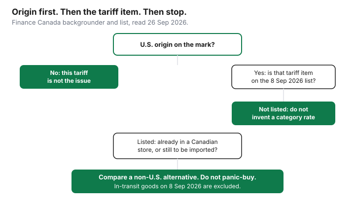

Household Items and Supplies · Canada
Canada's September 2026 Counter-Tariffs and Household Goods: Check Country of Origin Before You Buy Appliances and Furniture
On 8 September 2026, Canada put counter-tariffs on a defined list of goods that originate in the United States. Some of those tariff items are appliances, furniture, cookware, paper, and household plastics. Many others are not. The shopper’s job is to read the origin and the tariff item, not the logo on the store. This page is education. It is not a recommendation to buy now, wait, or stockpile.
The figures below are from Finance Canada’s backgrounder, “List of products from the United States subject to counter-tariffs effective September 8, 2026,” and from the complete list page that Finance Canada calls the authoritative working list. Both say the list was updated as of 26 August 2026. Both were read on 26 September 2026. Finance Canada says the consolidated list is for information. The Schedule to the Customs Tariff is the legal text. If a model’s tariff item is unclear, stop at the list rather than guessing from a department name.
Key takeaways
- The countermeasures take effect at 12:01 a.m. on 8 September 2026. Finance Canada describes rates of 15, 25, and 50 percent, matched to the U.S. rate on the same goods, on about $27.6 billion of imports.
- Origin is a U.S. marking test under the CUSMA country-of-origin regulations. The store’s nationality is not the test. Goods in transit to Canada on the in-force day are excluded.
- On the 26 August 2026 list, household refrigerators (8418.21.00), household washers (8450.11.10), and dryers not over 10 kg (8451.21.00) are 25 percent. Furniture items on that list are not one rate.
- Do not panic-buy. A machine already in a Canadian store was not re-imported on 8 September. Compare a non-U.S. alternative when the tariff item is actually on the list.
What changed on September 8, 2026 and why it matters for household shopping
Finance Canada’s backgrounder says that, effective 8 September 2026, Canada imposes 15, 25, and 50 percent tariffs on products drawn from goods the United States targeted, with each product’s rate matching the corresponding U.S. rate. The same page ties the measure to a U.S. 50 percent tariff on $27.6 billion of Canadian goods effective 22 August 2026, and says Canada is matching dollar for dollar. The counter-tariffs cover products accounting for $27.6 billion of imports from the United States. The sectors named in that summary include steel, dairy, appliances, agricultural equipment, pulp and paper, and electronics. Household shopping sits inside “appliances” and, on the item list, inside furniture, paper, and plastics. A sector name is not a rate.
The complete-list page, read the same day, repeats the 12:01 a.m. start on 8 September 2026 and adds that, in certain sectors such as steel and aluminum, existing counter-tariffs increase from 25 percent to 50 percent. Other existing counter-tariffs, including on autos, continue. For a washer or a sofa, the row that matters is the tariff item in the 8 September 2026 table, not the steel sentence. Dentons’ 9 September 2026 note makes the same practical point: rates can differ between subheadings inside one heading, and a general product description is not a classification. Use Dentons as a reading aid. Use the Finance Canada table as the list.
Two sentences on that backgrounder decide most aisle arguments. The tariffs “only apply to goods originating from the U.S.,” defined as goods eligible to be marked as a good of the United States under the Determination of Country of Origin for the Purpose of Marking Goods (CUSMA Countries) Regulations. And “Canada’s countermeasures do not apply to U.S. goods that are in transit to Canada on the day on which they come into force.” Administration details are pointed to CBSA customs notices. This draft did not open a separate customs-notice PDF beyond that pointer. The backgrounder itself is the in-transit rule cited here.
Household categories on the list (appliances, furniture, cookware, paper, plastics)—verify on Finance Canada
The rows below are tariff items read off the 8 September 2026 table on the complete list (list updated 26 August 2026). Descriptions are the indicative text Finance Canada prints. Indicative means the words are a guide. The tariff item is the hook. A vacuum under heading 85.08 was not in the household rows pulled for this draft; do not assume a vacuum is in or out until you look up its item.
| Category | Example tariff item | Rate on that item | How to check before you pay |
|---|---|---|---|
| Refrigerator, household, compression-type | 8418.21.00 | 25% | Spec sheet, carton, retailer origin field |
| Combined refrigerator-freezer | 8418.10.10 | 25% | Same origin check; confirm the item, not the word “fridge” |
| Chest freezer, household type, not over 800 litres | 8418.30.10 | 25% | Same origin check |
| Household washer, fully automatic, not over 10 kg | 8450.11.10 | 25% | Same origin check |
| Drying machine, not over 10 kg | 8451.21.00 | 25% | Same origin check |
| Electric oven, cooker, or cooking plate | 8516.60.20 | 25% | Same origin check |
| Window, wall, ceiling, or floor air conditioner | 8415.10.00 | 15% | Same origin check; 15% is this item, not every AC |
| Domestic heat pump or air conditioner with a refrigerating unit | 8415.82.10 | 15% | Same origin check |
| Toilet paper | 4818.10.00 | 25% | Carton origin; unit price still decides the shelf choice |
| Handkerchiefs, facial tissues, and towels of paper | 4818.20.00 | 25% | Carton origin |
| Paper tablecloths and serviettes | 4818.30.00 | 50% | Do not copy the toilet-paper rate onto napkins |
| Plastic tableware and kitchenware | 3924.10.00 | 50% | Carton or moulding mark |
| Aluminum table, kitchen, or household articles | 7615.10.00 | 25% | Cookware mark, not the store flyer header |
| Upholstered wooden seat, domestic | 9401.61.10 | 25% | Furniture spec sheet |
| Upholstered metal-frame seat, domestic | 9401.71.10 | 50% | A metal frame is not the wooden-seat rate |
| Wooden kitchen furniture | 9403.40.00 | 25% | Spec sheet |
| Wooden bedroom furniture | 9403.50.00 | 50% | A bedroom suite is not the kitchen-furniture rate |
Stainless-steel household articles under 7323.93.90 are 25 percent on the same list. Other wooden furniture for domestic purposes, 9403.60.10, is 50 percent. The pattern is the point: “furniture” and “paper” are not single rates. Re-open the list on the day you buy. A later amendment would not be visible in this table.
How to check country of origin on a spec sheet, box, or retailer site
You are not classifying the good for the CBSA. You are refusing to guess. On an appliance, open the specification sheet and find “country of origin” or the equivalent French line. On the carton, read the origin mark rather than the “distributed by” address. On a retailer product page, use the country-of-origin field if the page has one. Write the model and the line you saw. A photo of a blank field is not an origin.
Finance Canada’s test is narrower than a sticker hobby. The good has to be eligible to be marked as a good of the United States under the CUSMA marking regulations. A product shipped from a U.S. warehouse can still be originating elsewhere. A product bought at a U.S.-owned chain in Canada can be made in Canada, Mexico, Korea, or China. If the retailer cannot say, treat the exposure as unknown and compare a model whose origin is printed. Unit price still matters for paper and plastics that you buy often. That method is the unit-price guide. Running cost of an appliance is the EnerGuide label, which a tariff does not replace.

What happened to prices last time (2025 counter-tariffs) and pass-through expectations
The complete list, read 26 September 2026, still publishes an earlier window titled “Effective September 1, 2025 to September 7, 2026,” and another titled “Effective up to August 31, 2025.” Those headings are the evidence that counter-tariffs were already a live instrument before 8 September 2026. The same page says that in certain sectors, including steel and aluminum, existing counter-tariffs rise from 25 percent to 50 percent. That sentence is about the tariff rate on the import, not about a measured change in a Canadian sticker price.
This draft did not open a Statistics Canada or retailer study that quantified how much of a 2025 surtax was passed through to fridge or sofa prices. Inventing a pass-through percent would be a guess. What can be said from the pages that were opened: the charge is a surtax on goods that originate in the United States and are imported. It is not a button that rewrites every price already on a Canadian floor. Whether a retailer later changes a shelf price is that retailer’s decision, on that model, after its own costs. Expect the effect to be uneven. Do not treat a 25 percent tariff item as a 25 percent hike at the till.
Buy now vs wait: in-transit stock, non-U.S. alternatives, and not panic-buying
The only timing instruction this guide will give is: do not panic-buy. Finance Canada excludes U.S. goods that are in transit to Canada on the day the countermeasures come into force. A washer that landed in a Canadian warehouse in August was not imported on 8 September. Its sticker can stay put, rise, or fall for reasons that have nothing to do with this list, including a sale. The sale-calendar guide is where a planned replacement meets Black Friday and Boxing Day. A tariff headline is not a reason to pull a replacement forward.
If the model is U.S.-origin and its tariff item is on the list, compare a non-U.S. alternative of the same type and capacity before you pay a fear premium. If you cannot confirm origin, you also cannot confirm exposure. Wait for the spec sheet. A sinking fund for the replacement you already planned is the sinking-fund guide. The month the money leaves the account belongs on a zero-based budget, not in a same-day checkout from a headline.
Checklist table for appliance and furniture shoppers
| Step | What you write down | Action |
|---|---|---|
| 1. Model | Brand, model, and the retailer’s origin field | If origin is blank, ask or skip |
| 2. Origin | The mark on the spec sheet or carton | If it is not U.S. origin, this counter-tariff is not the issue |
| 3. Tariff item | The item number, not the category nickname | Open the Finance Canada list before you assume 15, 25, or 50 percent |
| 4. Where the unit is | In a Canadian store, in transit, or not yet ordered | In-transit goods on the in-force day are excluded by the backgrounder |
| 5. Alternative | One non-U.S. model of the same type and size | Compare. Do not panic-buy |
Sources & date stamps
- Finance Canada backgrounder, list effective 8 Sep 2026, list updated 26 Aug 2026, read 26 Sep 2026: 12:01 a.m. start; 15, 25, and 50 percent; $27.6 billion; U.S. origin under the CUSMA marking regulations; in-transit exclusion; CBSA customs notices for administration.
- Finance Canada complete list, same update date, read 26 Sep 2026: authoritative working list for items and rates; informational only; Customs Tariff schedule governs; prior windows dated to 31 Aug 2025 and from 1 Sep 2025 to 7 Sep 2026; steel and aluminum note on 25 percent rising to 50 percent in certain sectors. Tariff items and rates in the table above are from the 8 Sep 2026 section of that page.
- Dentons, 9 Sep 2026: rates can differ by subheading; do not rely on a general product description. Used as a reading aid, not as the rate table.
Frequently asked questions
Does the counter-tariff apply because the store is American?
No. Finance Canada's 8 Sep 2026 backgrounder says the countermeasures apply to goods originating in the United States, meaning goods eligible to be marked as U.S. goods under the CUSMA country-of-origin marking regulations. A Canadian banner selling a Korean washer is not the test. A U.S. banner selling a Canadian-made chair is not the test either.
How do I find the country of origin before I buy?
Read the origin line on the spec sheet, the carton, and the retailer's country-of-origin field, and write down the model number. That is the shopper's check. The legal test Finance Canada names is the marking regulation, which an aisle photo does not replace. If the field is blank, ask before you treat the price as settled.
Will prices go up right away on items already in stores?
Not automatically. The surtax is on importation, and Finance Canada's backgrounder says the countermeasures do not apply to U.S. goods in transit to Canada on the day they come into force. Stock already in a Canadian store was imported earlier. This draft did not open a study that measured how fast any 2025 surtax showed up on shelves.
Are all appliances and furniture on the list?
No. The Finance Canada list updated 26 Aug 2026 is item by item: household refrigerators, washers, and dryers cited below are at 25 percent, and some furniture items are 25 percent while others are 50 percent. A product that is not on the list is not given a rate by a category nickname.
Should I rush to buy before prices change?
No. Rushing is how a household pays for a machine it did not need, at a price that may not have moved. Compare the origin, the tariff item, and a non-U.S. alternative, then buy on your replacement date. Education only: this page is not a timing call to purchase.